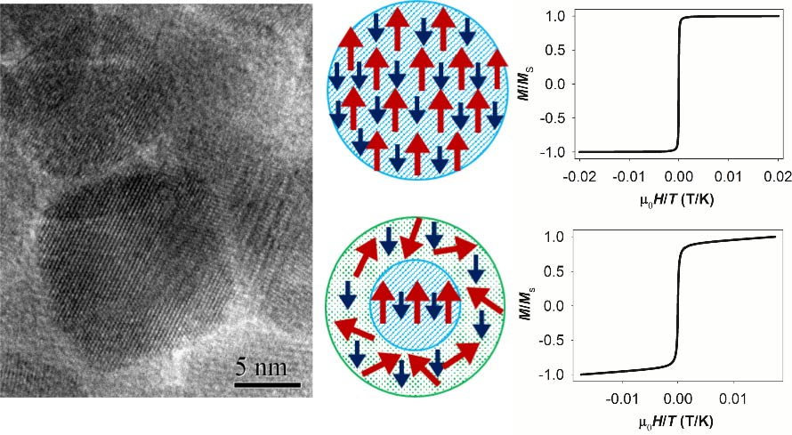
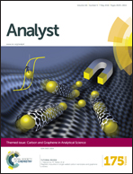
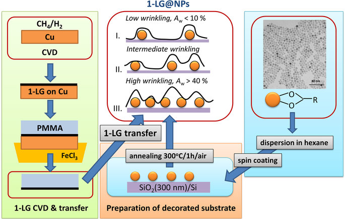
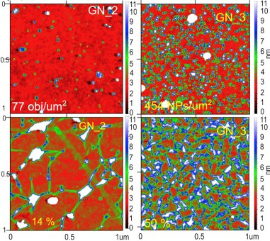
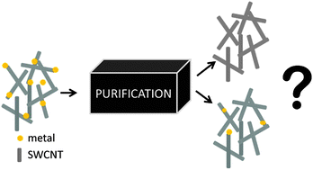
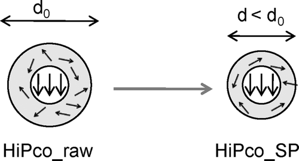

Current research is focused on the graphene-clay systems. Previous research was done in the field of magnetic nanoparticles (NPs), NP based systems and carbon materials (carbon nanotubes, graphene). The main focus was the correlation of the internal structure and magnetic response of the NPs, and investigation of carbon materials (the metal-free CNTs, wrinkled graphene).

B. Pacakova, S. Kubickova, G. Salas, A. Mantlikova, M. Marciello, M.P. Morales, D. Niznansky & J. Vejpravova
Nanoscale 9, 5129-5140 (2018)

J. Vejpravova, B. Pacakova & M. Kalbac
Analyst 141, 2639-2656 (2016)

J. Vejpravova, B. Pacakova, J. Endres, A. Mantlikova, T. Verhagen, V. Vales, O. Frank & M. Kalbac
Scientific Reports by Nature 5, 15061 (2015)

B. Pacakova, J. Vejpravova, A. Repko, A. Mantlikova & M. Kalbac
Carbon 95, 573-579 (2015)

B. Pacakova Bittova, M. Kalbac, S. Kubickova, A. Mantlikova, S. Mangold & J. Vejpravova
Phys. Chem. Chem. Phys. 15, 5992-6000 (2013)

B. (Pacakova) Bittova, J. Poltierova Vejpravova, M. Kalbac, S. Burianova, A. Mantlikova, S. Danis & S. Doyle
J. Phys. Chem. C 115, 17303-17309 (2011)